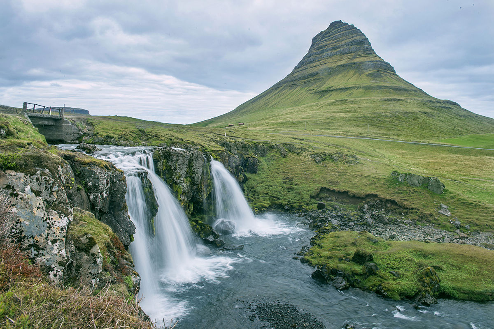

HOME
1.Kirkjufell(Church Mountain)

Kirkjufell, or 'Church Mountain', is a distinctly shaped peak found on the north shore
of Iceland’s Snæfellsnes Peninsula, only a short distance away from the town of
Grundarfjörður. It is often called ‘the most photographed mountain in celand’ due to
its dramatic formation and perfect coastal location.
Visit Kirkjufell on a tour of the Snaefellsnes Peninsula. The landmark is
incorporated into many self-drive packages, such as this 10-Day Summer Trip, and
vacation packages, such as this 6-Day Winter Tour. Those who rent a car can seek it
out while exploring the west.
Kirkjufell takes its name from its resemblance to a church steeple, sharpened
at the top with long curved sides. From other angles, the mountain has been compared
to a witch’s hat or even a freshly scooped ice cream.On top of that, the colours of
Kirkjufell change with the passing seasons;the summer sees it a lush green, full of life,
whilst the winter months scar the mountain’s face with a mask of barren brown and white.
Of course, it is more impressive under the midnight sun in the weeks surrounding the
June equinox,and under the northern lights, best seen between September and April.